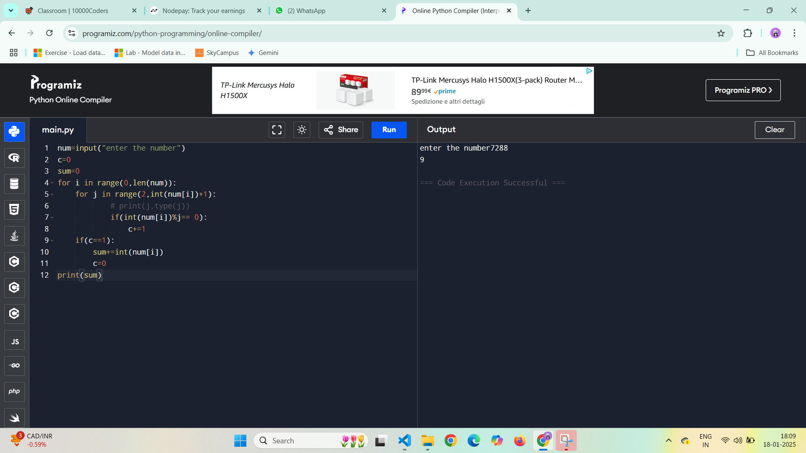

1) WAP to print the nearest prime number input: Enter a number: 10 output: 11 input: Enter a number: 20 ( 20 has 2 nearest prime numbers) output: 17 23
num =int(input("enter a number "))
def isPrime(n):
if n>1:
for i in range(2,(n//2)+1):
if n%i==0:
return False
return True
return False
if(isPrime(num)):
print("it is prime ")
else:
lp=num-1
rp=num+1
# print(lp,rp)
left,right=True,True
while left or right:
if( isPrime(lp) and left):
x=lp
left =False
lp-=1
if( isPrime(rp) and right):
y=rp
right=False
rp+=1
print(x,y)

2) WAP to print the sum of prime digits in the given number input: Enter number: 7288 output: 9
num=input("enter the number")
c=0
sum=0
for i in range(0,len(num)):
for j in range(2,int(num[i])+1):
# print(j,type(j))
if(int(num[i])%j== 0):
c+=1
if(c==1):
sum+=int(num[i])
c=0
print(sum)
